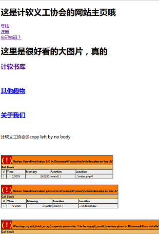
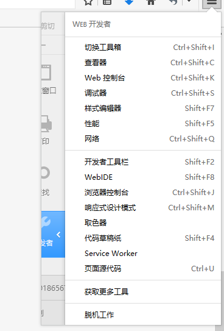
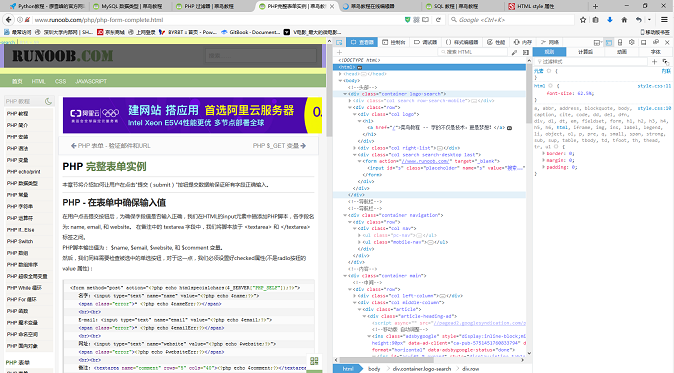
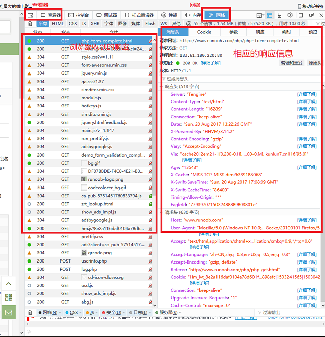
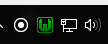
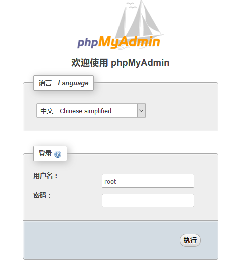

这是个好问题，因为我也不知道，可能是因为这作者比较无聊？
就是你看的这些。
OK，其实无非就是一下几点：
还有其他的吗，没有的。
这里让会长写写好不好？
让例行部长写吧。
截至作者偷懒写这东西的时候，网站只有一个雏形，她是这样的：

以后是怎么样的以后再说吧。
这个网站在开发时主要用了一下工具：
- WAMPServer 3.0.6 64bit
- NetBeans IDE 8.2
- Firefox 浏览器
其中NetBeans是用来开发写代码的；
firefox浏览器是用来查看和调试的；
WAMP是Windows、apache、MySQL和PHP的合称，apache是服务器模块，MySQL是数据库模块，php是服务器端运行的脚本。
网站运作的过程基本就是浏览器和服务器的各种坑藏交易，这场交易是通过HTML/css、js、php等脚本语言来搞的。
下面将介绍关于关于网站开发的一些内容：
好了就这些了。
Firefox浏览器
为什么要用的Firefox浏览器呢，这可能是作者的特殊癖好吧。
浏览器有个好用的功能，叫开发者工具,这是个神器，在网络编程中帮大忙了。因为用惯了Firefox的，所以这里就简单介绍一下它的开发者工具，其他浏览器例如chrome的也很强大，可以去试试看。
如下图是火狐的开发者工具菜单：

因为水品有限，只对查看器和网络这两个工具比较熟悉，试着点了查看器工具，结果如下：

可以看到左边是原网页，右边是工具界面。试试看嘛，把鼠标放到原网页上可以看到工具把网页上的元素分析出来了，工具界面调出该元素的源代码等等的信息。这样就可以很快的分析网页的代码（并尝试找出其中的漏洞什么的了）。
再试试网络工具，结果如下：

这里涉及的东西比较多，所以就不深入。
NetBeans
为什么不用vs啊？咦好像可以试一试( •̀ ω •́ )y。
据说PHP应该用文本编辑器写的，不过好像IDE会方便一点呢，据说NetBeans是免费中比较好用的一款，那就用了。
结果还好，没有eclipse那烦人的配置，用着用着居然觉得挺好用的。
新建项目的时候把项目路径放在WAMP的www文件夹里就可以了，好像忘了还有什么配置，就该就这些了。
WAMP
这个也方便，下载，安装。
然后就可以启动了，启动结果再任务栏里，如下图：

如图那个W，如果是绿色的就表示服务均启动成功，正常！
如果运气不好就可能会橙色甚至红色，这表示有些服务未能成功启动，就要网上查资料找找原因了。
上文讲到，WAMP是包括apache、MySQL、PHP的，所以就要分别对这三个进行配置了。
先对MySQL，他是需要账户和密码的，管理员root是初始没有密码的，可以通过phpMyAdmin工具进行管理和设置。左键单击W图标可以看到phpMyAdmin的入口，点击结果如下图：

如图密码留空直接点执行就可以登陆了。
登陆后就可以添加密码和修改账户等等了。
这里有数据库的图形化管理，很方便熟悉一下就可以上手了。
作者很赖，还没有展望。